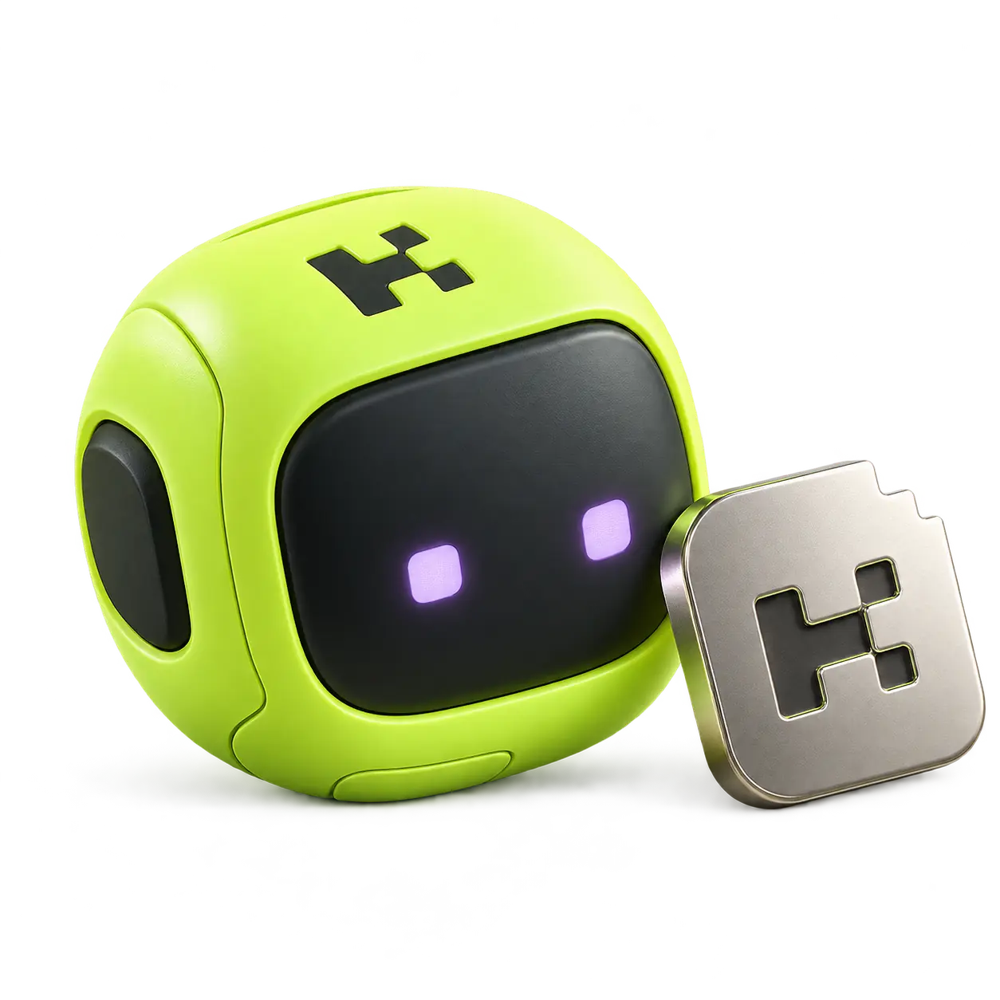

PRELAUNCH · NO TOKEN LIVEChecking service configuration…
AI FOR TOKEN HOLDERS
Hold tokens.
Use AI.
Connect your Solana wallet to use AI in the browser or your own tools. Eligible wallets get a daily allowance.
- Wallet sign-in
- Your tokens stay put
- Usage you can see

WALLET ACCESS PASSNot connected
Your wallet is your login.
Sign a login message to prove the wallet is yours. No email or token transfer.
- Holding required
- Set at launch
- Daily allowance
- Published at launch
Input and output count together. The shared pool is finite.
——
Save this key somewhere private before you leave.
Official token details
No token is live or configured by default.
Mint not publishedKeys and account security
Download latest 100 usage records (CSV)
Revoking keys blocks new API calls. Signing out devices keeps API keys active.
WORKSPACE
Documented catalog · service limits shownWhat can we help you do?
Pick a starting point or write your own prompt.
History is kept in this tab. Sending includes previous messages.Ctrl/Cmd + Enter to send
Earlier messages
Create a key above to start.
ANSWER
Your answer will appear here.
Limits are shared across your keys.
Request settings
Service limit 16,384 tokens; provider acceptance may vary.
Check the request against your current allowance without running the model.
COPY, PASTE, RUN
Uses your selected model and output budget. Automatic retries stay off.
Set SLIPVOLT_API_KEY in your environment. The legacy variable name remains supported.
Connection settings · no secrets
YOUR USAGE
Connect to load your private usageSee what you’ve used.
Allowance, requests, and recorded compute for this wallet.
Your usage stays private.
Connect the wallet you use for access to see it.
BY MODEL
Reset time unavailableToken use
All-time reported breakdown: unavailable.
No completed model usage yet.
RECENT
Export CSVLatest requests
No requests yet.
THREE STEPS
From holding to helpful.
Connect
Sign in with the wallet that holds the published amount. Your tokens stay in your wallet.
Get your key
Create a private customer key. No second payment step. Every key shares the wallet allowance.
Make something
Chat here or use the API. Input and output both count toward your finite daily allowance.
Service limits and operations
Clear limits before you send.
- Default output
- 4,096 tokens
- Service output cap
- 16,384 tokens
- Wallet rate
- Published by service
- Automatic overage
- Not enabled
Funding and availability.
Models, provider funding, and the holder gate are separate checks. Private wallet usage stays on this page.
GOOD TO KNOW
Common questions.
What does holding unlock?+
A daily allowance of AI input and output tokens, shared across your customer API keys. The access pass shows the current holding requirement and allowance. New requests also depend on funding and model availability.
What happens if my balance drops?+
Holdings are checked before each new request. If the wallet is below the published amount, its keys cannot start new calls. Calls already in progress may finish.
Who processes my prompts?+
Holdbyte forwards requests through OpenBroker to the selected Gonka model provider. Read Privacy & data before sending personal, confidential, or regulated information.
How is the allowance funded?+
The operator funds a finite native-GNK budget. Service pauses when funding or capacity is unavailable. Developer compensation, if any, comes after service costs, customer obligations and reserve replenishment; percentages will be published before launch. No payouts are automated.
Resources
AI tokens measure text usage; they are not the Solana tokens in your wallet.